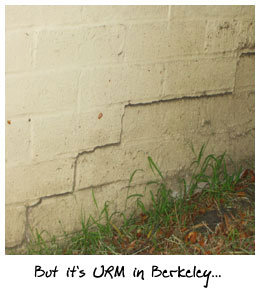
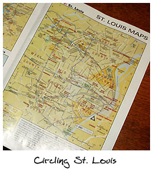
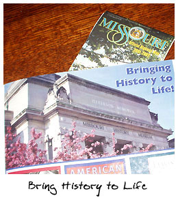

# 120: Another installment of Trials, Triumphs and TrivialitiesMay 22, 2003 Dear Friends, Apologies for the delay in sending this postcard. As mentioned in some of my previous missives, my trip to St. Louis was mostly a surprise: I was on an airplane flying to St. Louis just less than a week after hearing about my Grandmother's death. And, to be honest, I didn't expect to do much thinking about game design while back in the midwest. But, as I've discovered on other recent trips, the change of scenery gets the brain going, and such was the case here, especially on the third day of our trip, when the family and I drove a big loop around St. Louis to see the Mississippi and a few other sites. During that loop, we saw some neat historical things that really got me thinking. In fact, almost everything during my trip to St. Louis got me thinking about that same topic... history. Sorry to say that I don't have any polaroids of this trip, as I usually do, but like I said I wasn't planning for this postcard when I left for St. Louis. Nonetheless, I've taken some pics of some of the artifacts that we brought back from the midwest to help offer up the visual experience of this trip. Family as HistoryThe main purpose of my trip was, as I mentioned, a funeral. The great matriarch of the Appel clan had passed away at the mature age of 86. There was, as you might expect, a church ceremony, followed by a commitment ceremony at the cemetery for all the closest relatives. I won't dwell on all this, because I've done my grief thing already, more than enough times over the duration of the weekend; my tear glands still hurt. What I will dwell on, however, is the immense sense of family that suffused the entire experience. It began at the church. We — my father, step-mother, sister, wife, and I — were some of the first ones there, and so we got to meet and greet everyone who came to the ceremony early. Aunts and uncles. Cousins. My late grandmother's sisters (one of whom mistook me for my father; ah, time moves on). There were three generations of Appels under one roofs. (And only three, I should note, because our latest generation hasn't yet held up our end of the procreation bargain. I'm 31 years old, and I have one cousin older than me and another five younger, but we are all blissfully childless.) Present was my generation, born in the 1970s, and my father's generation, born in the 1940s and 1950s, and my grandmother's generation, born in the 1910s and 1920s. For me, flower children, Martin Luther King, Jr., and the Kent State killings are all ancient history, but I was surrounded by people who remembered those times... whose children remembered those times. I was struck by the same sense of familial community later that day at the cemetery. My grandmother was laid to rest with her husband, who predeceased her by over thirty years, not far from her son, and also near to a few other Appels who I did not even know. I could sense the shared community here, the stories lying just below the ground... the history. My point in all of this is simple, in a game you need go no further than your characters to find history. In any game your respected elders will remember great swaths of history that are perhaps legend to newer generations. And, their own interpersonal interconnections and interminglings with each other will be important histories all their own. Think of your own family, of the shared childhoods, of the smirking secrets, of the angry feuds. Think of the historical events that members of your family have been a part of you — your fathers, mothers, grandfathers, grandmothers, and greatgreats. Then, move that into your game and the sense of history will become vivid... almost palpable. Architecture as HistoryI'm always impressed, in St. Louis, by the beautiful red brick buildings that fill the city. I've seen them before; I was born in St. Louis and I've been visiting relatives there ever since I moved to California. But, still it's a shock whenever I return and see at least 50% of the house built of bricks.  We do have bricks out here in California too, but they're rare and getting rarer year by year. We call them "URM" out here, which is to say Un Reinforced Masonry. Oddly we tend to paint over those scant brick remnants in California, so you rarely see the bright red facades. I think we're trying to pretend they don't exist, because brick is dangerous out here in Earthquake Country. But, back to St. Louis. As I said, the number of brick buildings is amazing, and what's just as interesting in some ways is the fact that if a house isn't brick then it's covered with vinyl siding. So you have a strange two-dimensional uniformity: brick or vinyl siding. There's no exposed wood, no adobe... just these two extremes (all due to the weather, of course). The vinyl buildings also tend to be the cookie cutter ones, where the same building is cloned time and again down the same street. While we were in St. Louis my father mentioned that his mother's house was one of the first cookie cutters in her neighborhood, and that the neighbors were absolutely aghast. Such things just were not done. One other notable bit of architecture caught my eye in St. Louis, this one while we driving along the Mississippi during our Saturday roadtrip. All along the river are twenty-foot or so tall levies, meant to keep away the flood waters when the Mississippi rises. However, rather than just keeping them as boring, heaping mounds of dirt, the municipalities have tried to adopt these necessities to practical use. There was a bike trail along the levy we saw east of the Mississippi in Illinois — but still its practical purpose, as a wall against nature, was obvious. My point here is that the landscape of a land, and its architecture, can help you portray the past (and present) of a place. St. Louis' brick buildings told of its lack of earthquake and its levies told of its own disaster, the flood. In addition, there were stories wound up in those cookie cutter homes which had been placed down literally amidst the beautiful old brick buildings — stories of new immigration, of resentment, and of changing times. History as ArtifactDuring our Saturday roadtrip we did a big circle around the St. Louis metropolitan area. It was a bit of sight-seeing — and enjoyment — that I hadn't expected on the trip, and it was well, well appreciated. On and off during the day we were bombarded by a storm that was worse than just about any we get back here in the Bay Area. We were literally dodging Tornado warnings, and even passed through a few towns in Illinois in which funnel clouds had formed earlier in the day. Still, it was fun and even relaxing (believe it or not). Part of the day was simple travel: a hop across the Missouri River, then a passage over the Mississippi, then a drive down its Illinois bank, then a return across the mighty river. But we also took the time to stop and see a few artifacts of the past.  Chain of Rocks Bridge was the most interesting. It was a tiny little bridge, apparently the first across this section of the Mississippi, which was just two lanes wide. I'm not convinced that two modern cars could actually fit abreast on it now. But, fortunately, the bridge has been entirely turned into a pedestrian walkway, whose main purpose seems to be to allow tourists to cross over the Mississippi. The bridge was also, in long gone days, part of Route 66, the highway that crossed the country (and also the name of an old television show set on the same highway). Route 66 signs are still posted on the bridge. All told, it felt like history, and as I stood on the bridge I could imagine Model Ts and Model As slowly putt-putting across its span, on a highway that for the first time ever had opened up the whole country to the casual traveller. It was just a half-century ago that this was all still reality, but it seems so very, very far away. Out in the Mississippi, just off the Chain of Rocks Bridge, are some very curious-looking Castle-like structures. They have turrets and all kinds of other beautiful architectural flourishes. Apparently they were originally used as water pump stations, to drag the water from the Mississippi inland, toward the Illinois bank if I'm not mistaken. They didn't seem to be used anymore, and I was never able to fathom entirely why you'd build long pipes to suck in water from the middle of the river. In any case now they're just strange artifacts of the past, sitting exposed for all to see. After we'd returned to the Missouri side of the river, and briefly passed by the famous Gateway Arch, we decided we needed lunch, and so we headed over to Union Station. As you might guess, Union Station was once the main train station in downtown St. Louis. My grandfather, who used to work at the station, told me there were 44 tracks in its time. A concierge at the station said it had once moved 100,000 people a day through its doors. However, by the early 1970s, with the advances in airplane technology, Union Station was dying. My living grandmother remembers travelling through Union Station in its final days, and says that there were holes in the roof of the station proper, that birds were flying in and out through these arial passages. Now, Union Station in St. Louis has been rebuilt. As a mall. It's very sad in some ways, to have such a mighty edifice reduced to being a lackey of American consumerism. But, on the other hand, the rebuilding has been beautifully done. The station was painstakingly restored to what it looked like when it was originally built. It has beautiful, vaulted ceilings full of artwork and designs. Stained glass looms over the main entrance, showing St. Louis sitting aloof from San Francisco and New York, at the center of the world. It's a truly beautiful memory of the past, and its preservation (and restoration) is a very cool thing. Times change, the world changes, but sometimes the artifacts of the past remain. Both Union Station and the Chain of Rocks Bridge have required funding to keep them beautiful, but even without, the artifacts would still exist, just in a more delapidated form. As a game designer, remember that history is change; the world today is not the same as the world yesterday, and those changes should leave behind physical reminders of how things used to be. These could be large artifacts like that bridge or that station, or they could be smaller items grouped together in a museum (as we saw later the same day at the Missouri Historical Museum). Think of the Roman aqueducts still dotting the European landscape, or the standing stones. Think of the coins, tools, and weapons you've seen in collections. Think of cities built atop old cities and sewers alike. Then, evoke that feeling of wonder and of history in your own world that you're creating. Leaving History BehindI find it somewhat ironic that a trip full of history both began and ended in airports. San Jose, Phoenix, St. Louis, and back again. Because, airports are places almost entirely devoid of history. Oh, you might find the occasional monument that was raised at some point because someone waved wads of money around, but even they seem somewhat sterile. As for the rest of airports, they're all noveau moderne and their history seems to be erased every day, recarpeted every month, and repainted every year. When I was in St. Louis I was told the O'Hare Airport was award-winning, but it looked almost identical to the Milwaukee Airport that I visited last year, and not too far off from every other airport I've ever visited in my travels (except maybe the open-air airports in Hawaii... those were something else). Since being back in Berkeley (aha! I've let the cat out of the bag and admitted that this postcard was not just late, but written after the fact), I've also been somewhat bemused by the lack of history that I find within my home town. Because, the truth is, it's here. Any visitor would see the old prison of Alcatraz out in the Bay, wonder at Treasure Island, perhaps even amble through the Berkeley campus, admiring the buildings there, built over an entire century. My own house, which I sit in now as I write this belated post card, is 97 years old, and I can see the patterns of history in its walls, the small rooms denoting the Victorian era of building, yet the beautiful molding and the large windows in the sun room, showing it was edging into the Arts and Crafts era. And, I can also see the places where the house has been changed over the years, a window boarded up here, a wall moved a couple of feet there, a hallway added, a couple of indoor bathrooms thankfully built. It's all history, but because I'm so immersed in this town (in this house) it tends to slide by me. So, if I have one last piece of advice, one last thought generated from my recent travel to St. Louis, I'd simply say, try and figure out how to keep your game's setting as vivid and exciting as that faraway town that you're seeing for the first time, because when you do so its history (its backstory) can shine too. Closing off now. Roger and out. I'll write again in another month or two; it's going to be a US-trotting summer, Your Pal,
|